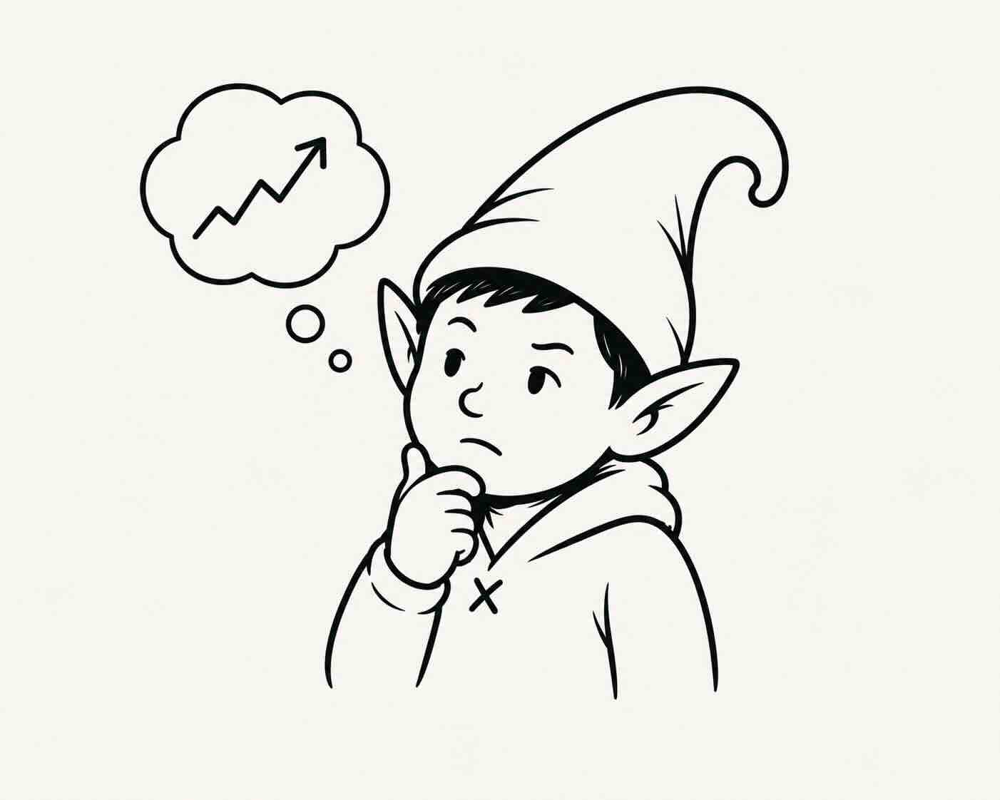

Theo is a self-improving options-trading agent.
Every cycle it gathers research, forms a falsifiable thesis, simulates the ways to trade it, and sizes the one it trusts most by a track record it has to earn. Then it scores itself honestly — whether the view was right, whether the structure was right, or whether it just got lucky — and only the first two ever move its confidence. That's the self-improving part: not a bigger model, a more honest one.
The project is trdrbot; the agent it runs is called Theo, for theta — the greek its short-dated book lives on. Built on Alpaca's MCP server · $100,000 paper account
Ben Emson · benemson.com · x.com/emson
Over one week, profit and loss cannot tell skill from luck.
Most trading agents score themselves on the money they made. We simulated what that actually proves over a hackathon-length window. It is close to nothing.
How often a genuinely skilled agent — one that really is right 60% of the time — out-scores a coin flip over 20 trades. Nearly a third of the time, the coin wins.
Where a zero-skill agent lands over that same window. Any result inside this band is evidence of nothing.
And an agent that learns from its P&L reinforces whatever story happened to correlate with money. That is how a system acquires a superstition.
So Theo asks two questions, not one.

Was my view of the world right? and was the trade I built to express it right? Profit alone answers neither.
Only the top-left box is unambiguously earned. Either loss still teaches something. The red box is the trap: money made on a wrong view. P&L scoring reads that as proof; Theo learns nothing from it.
One loop, four stages, and a verdict that feeds back into the next trade.
The cheap half runs constantly; the expensive half — the model forming a view — runs roughly every 15 minutes. A stop checked hourly is worthless, so the watching never stops.
The ledger is the quiet one.
Forecasts on setups Theo declined are scored too, at zero risk — the only realistic
way to build a track record that means anything inside a week.
23,050 lines of Python · 757 offline tests · 7 trader-readable simulation scaffolds
The model gets one job. Everything that can be checked is checked by code.
- Form a claim that can be proved wrong — a named level, by a named date
- Propose at least two genuinely different trades that express it
- State an honest probability it will happen
Ideas come from three independent sources: a daily research pass, discovery where the news nominates the companies, and a “muse” that collides unrelated concepts.
- What each trade is worth — priced under one declared set of assumptions, with the market's own pricing beside it
- How many contracts — from the payoff and a track record the agent must earn, never from how confident it feels
- When to get out — the agent's own exit rules, checked every minute and executed without asking it
- The verdict — view right, trade right, or simply lucky
The model never executes anything. It cannot talk the arithmetic round, and “do nothing” is a legitimate, logged answer — Theo declines far more often than it trades. That is what makes the honesty structural rather than a promise.
How trdrbot uses Alpaca — and three things that were harder than they look.
One MCP session per cycle
Alpaca's MCP server runs as a local subprocess. The default adapter starts a fresh one for every tool call — six calls cost 12.3 seconds. Sharing a single session across the cycle cut that to 2.75.
−78% wall clock, measured
Real multi-leg option orders
Spreads, condors and butterflies go to the broker as one ticket with an intent declared per leg, then every leg is checked against what actually filled — risk is counted from the fill, never from what the model claimed.
verified against broker truth
19 tools bound, not 72
Handing the model all 72 tools cost roughly 21,000 tokens of menu on every call, 71% of it for tools never used once — and a longer menu measurably worsens which tool it picks.
$3.46 → $1.32 per decision cycle
The lesson that generalises. All three had already shipped as code that ran and quietly did nothing, while every log line looked healthy. That is why trdrbot has a health check that asks a question tests cannot: “you ran — but did you actually produce anything?”
One market repriced. The stock market had not caught up.
Interest-rate futures flipped intraday to price a September hike as more likely than a hold. Gold, Bitcoin and long bonds all sold off. The S&P barely moved — it sat 0.3% below its pre-announcement print after a 5.7% run.
That gap is the trade. Not a chart pattern: a dated, causal claim that one market had repriced and another had not.
“SPY drifts modestly lower into 2026-09-03 as equities digest the rate repricing.”
nine tool calls end to end: snapshot → bars → clock → news → option chain → simulate → size → order → record
Three ways to trade it. The comfortable one failed the maths.
| Candidate | Wins | Verdict |
|---|---|---|
| call credit spread | 76–92% | rejected collects $95 to risk $283 — it looks safe because it usually wins |
| butterfly | low | rejected needs the fall to stop exactly on one level, and four legs cost $22 to trade |
| put debit spread | 42% | taken pays 2.85 to 1 when it wins — worth taking even on the market's own assumptions |
Then code, not the agent, set the size: its honest 42% was cut further by its measured track record, capped three ways at once, and came out at 13 contracts — $2,171 at risk, 2.14% of the account.
Five rules took over. The score still waits for the date the claim named.
| take profit at | +140% |
| cut the loss at | −65% |
| abandon the idea if | SPY above 776 |
| close by | expiry day |
| alert if | our record ≠ the broker's |
The agent named the third rule as the one it trusts most: if the S&P makes new highs, the premise that stocks hadn't absorbed the news is simply false, and the position should die whatever the price says.
None of the five fired — it closed on an outside event first.
+129.1%
on the money put at risk. But this is not the number that moves anything.
- Did the S&P close below the level the claim named? → was the view right?
- Given that, was this the right way to trade it? → was the trade right?
Until that date passes, a 129% gain counts as unscored — not as proof of anything.
Trading bigger is the only reward on offer — and it has to be earned.
the starting allowance
5 claims scored
15 scored, and most of them explicable
40 scored, 70% explicable, and well calibrated
Climbing costs evidence, not confidence. The third rung is the one that bites: it is not enough to have been right, most wins must have been explained — which is exactly what a run of lucky trades cannot do.
Falling is faster than climbing. A 5% drawdown drops a whole rung immediately; 10% goes back to the start.
Theo sits on SCALE today, on 77 scored claims. The sizer also refuses outright any trade whose worst case is unlimited.
How much to bet depends on how sure you are the edge is real.
Run on the S&P's own past moves through the production sizer. Full explorer →
typical gain when the view is right, against the loss when it is wrong
—
The P&L — and the number we would rather not show you.
from a $100,000 start
at its high water mark, no drawdown
7 closed, from −2.9% to +129.1%; 3 open, 3 never filled
162 declined outright, 11 traded
By its own scorecard, Theo has not yet shown skill. The measure of whether its forecasts separate winners from losers reads 0.004: a stated 70% is not landing more often than a stated 55%. And whether a 40% call really lands 40% of the time cannot be answered yet — 77 scored claims are only 9.8 independent ones once repeated names are discounted.
Worse, and more useful: the scoring queue was stuck. The step that decides right-versus-lucky sat silently jammed for days. We found it, drained it, and its first verdict was UNSCOREABLE — the one trade with no claim recorded at entry. Since then exactly one box has filled — a view that was wrong and lost money, which is the box that teaches. The other three still read zero. The system that would let us hide this is the same system that found it.
We report the P&L because it is real. We built the machinery precisely so there would be something better than it to judge us on.
What Theo does not do — written down before a judge finds it.
Some trades are refused, not approximated
Structures whose value needs a model we deliberately do not have are turned down outright. A confident wrong number is worse than a refusal.
Paper fills are not real fills
Costs are charged from the real quoted spread on every leg, before the decision. But a paper account still fills more kindly than a live one would — most of all on four-leg structures.
No human approval step
A paper account, and approval gates break the feedback loop. What replaces it is stricter: the agent cannot execute what the arithmetic refuses to compute.
Every defect is public
A living bug ledger records each one the moment it is found and removes it only in the commit that fixes it. 125 numbered issues so far.
None of these is a rough edge we ran out of time to sand. Each is a place where the honest answer was to refuse, and say so.

Any agent can make money for a week. Theo can tell you whether it deserved to.
The distinctive thing here is not the strategy. It is that every claim is written down before it resolves, scored afterwards on whether the reasoning held, and allowed to change how much capital the next decision gets — with a lucky win worth exactly nothing.
| Live record | trdrbot.com — every trade, decline and forecast, updated continuously |
| Deep dive | the risk research note · the interactive explorer |
| Account | Alpaca paper · $100,000 start · repo and demo URL with the application form |